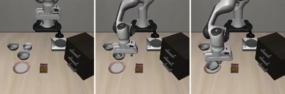

The cost
of a replan.
When a robot sees the world again, how much work does its next move really need?
A paired study of SmolVLA on a Tesla T4, using ten simulated manipulation tasks from LIBERO-Spatial.

One fresh observation per move.
Inside one replan
A vision-language-action policy turns images, an instruction and robot state into movement. SmolVLA predicts a whole chunk, executes its first action, then looks again.
Time per replan
On the T4, half precision speeds up the encoder. Fewer flow steps reduce repeated work, and replaying a CUDA graph cuts kernel launch overhead.
What did the CUDA graph check establish?
In the 20 matched timing episodes, eager and graph execution agreed on the first action and final outcome in every pair. Full trajectories matched in ten pairs, also seen in an eager repeat. The larger success study below used eager execution.
Did the task succeed?
Each pair starts from the same task and initial state. Counting which outcomes change shows what an aggregate success rate hides.
75.4% released · 78.4% three-step FP16
Paired 95% interval: −0.6 to +6.6 points.
The lower confidence bound clears the prespecified −5-point non-inferiority margin. The pooled three-step cohort includes 300 states added after the interim analysis.
Inspect outcomes across the ten tasks
How far do these results generalize?
The study covers one released checkpoint, one simulated task suite and one GPU model. The intervals describe paired episode outcomes. Across-task uncertainty is larger: the one-step confirmation has a task-cluster bootstrap interval of −1.0 to +12.7 percentage points.
One pair, in motion
Pick up the black bowl between the plate and the ramekin and place it on the plate. These two recorded simulations start from exactly the same scene.
Task 0 · Initial state 0 · Seed 1000. Playback shows 20 frames per second. Clip duration reflects the number of simulated actions and cannot measure inference latency.